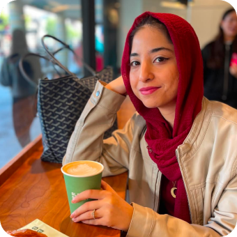
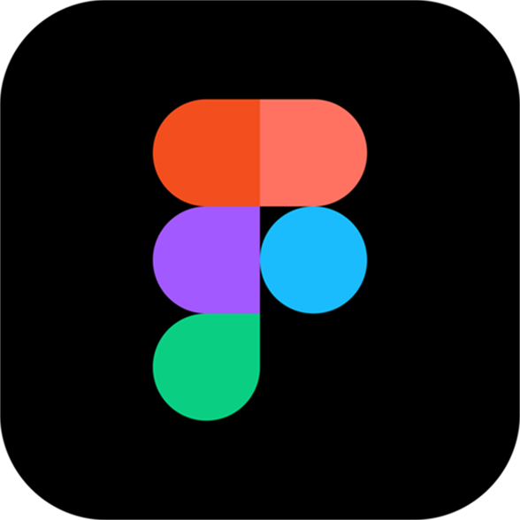
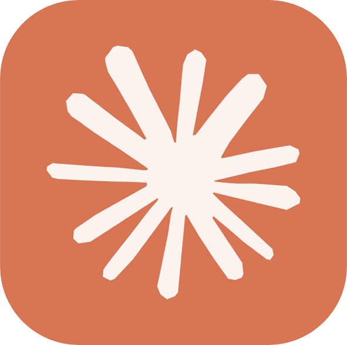
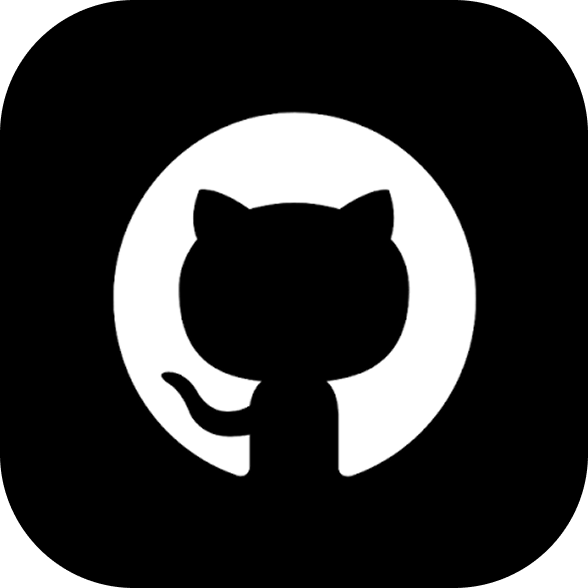
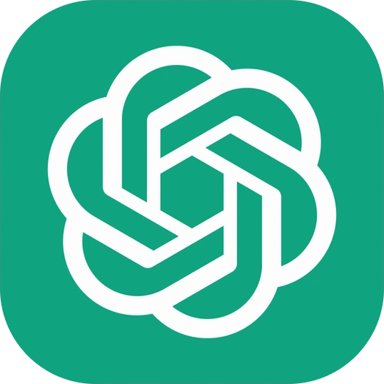
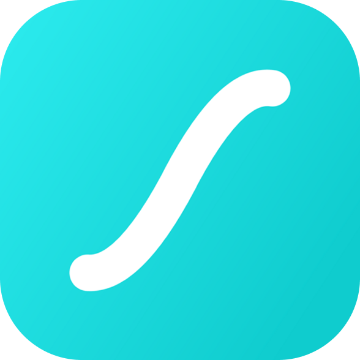
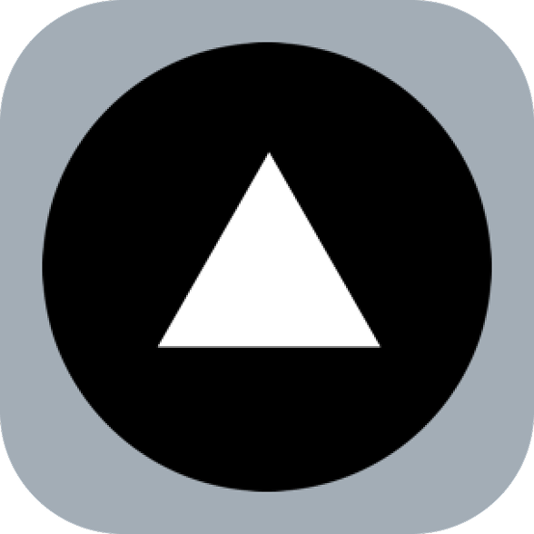
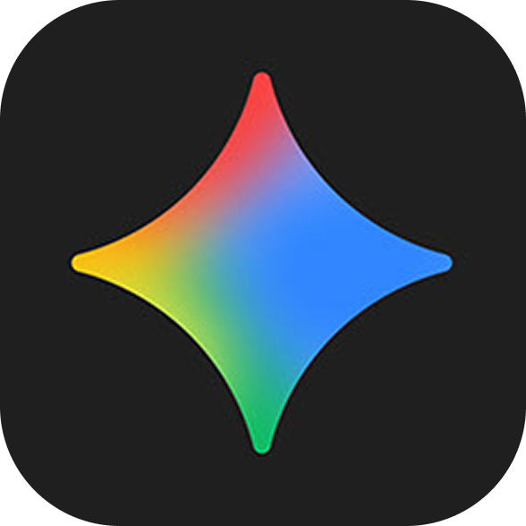
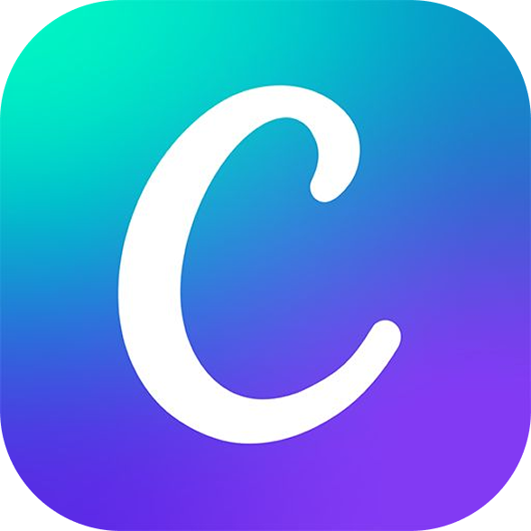
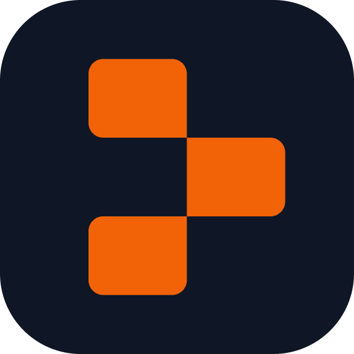

Me; In a Nutshell

I’m Eeman, a product designer with 4+ yrs experience. I specialize in design systems, usability audits, and analyzing data trends to craft end-to-end UXD for web, mobile, and SaaS platforms. With a background in architecture and UX certifications, I bring a strong blend of creative, analytical, and cross-functional collaboration skills.
Skills
Design system
Interactions
Dark mode
UI audits
Trends analysis
Experience
Educative
Nov’24 - Present
Product Designer • Full-time
- Refined design system components, widgets, colours & typography across all media platforms.
- Utilized user feedback and testing to define crucial KRs
- Improved signup rate by 2.5% and purchase rate by 9%, through product audits and UI tweaks.
- Worked in an agile system with PMs and devs to ensure seamless delivery and live updates.
Tkxel
Jul’23 - Oct’24
UX Associate • Full-time
- Designed web apps, mobile apps, websites, and responsive mobile websites for 5+ projects.
- Created web & mobile apps which resulted in a 72% improvement in performance, and 95% user satisfaction.
- Explored various aspects of UX, such as research, audits, usability testing, UX assurance, competitive analysis, affinity mapping, user personas, user journeys, interactive prototyping, etc.
- Gained experience in different business softwares, including ERP, CRM, LMS & HRM systems.
AIPixel
Feb’23 - Jul’23
UX Designer • Full-time
- Led a team of 2 to create entire app / web design from wireframes to interactive mockups.
- Redesigned the company website and successfully completed 5 client projects, with positive feedback.
- Collaborated closely with frontend & backend developers, project managers, stakeholders, and clients to ensure seamless workflow.
Toolkit









Certification
Google UX Design
7 course certification offered by coursera
Sep’22 - Jan’23
Education
Bilkent University
Bachelors in Architecture (B.Arch)
Sep’17 - Jan’22